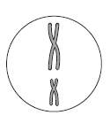
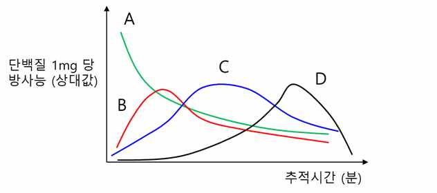

문제 3
(1) 체세포 분열과 감수 분열에서 세포당 DNA의 상대량이 2배로 증가하는 시기와 반감하는 시기를 각각 말하시오.
(2) 어떤 동물 (2n=4)의 생식 세포가 형성될 동안 서로 다른 시기의 염색체 수와 세포당 DNA의 상대량은 다음의 표와 같다.
| 시기 | 세포 1개당 염색체 수 | 핵 1개당 DNA의 상대량 |
|---|---|---|
| 가 | 4 | 4 |
| 나 | 2 | 1 |
| 다 | 2 | ㉠ |
- 4분 염색체가 발견되는 시기는 어느 시기 인가?
- ㉠에 들어갈 숫자는?
- 오른쪽과 같은 그림은 어느 시기의 염색체 인가?
- 오른쪽과 같은 그림에서 염색체가 1개 더 존재할 수 있는가? 있다면 어떤 현상에 의해서 가능한가?

(3) 다음 그림은 토끼의 이자 세포에 방사선 동위 원소인 \(^{14}C\)로 표지된 아미노산을 5분 동안 주입한 후, 세포 소기관의 시간에 따른 방사능 양의 변화를 측정한 것이다. A~D에 해당하는 세포내 소기관이 무엇인지 말하고, 그 근거를 제시하시오.
<핵, 골지체, 액포, 리보솜, 중심체, 수송낭 (운반소낭), 세포벽, 소포체>
